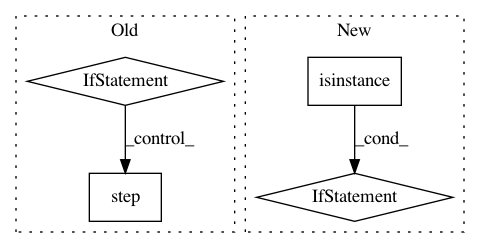

5e87cb3b9360b4bd10d40cdead521af60f0b0ae3,src/trainer.py,SamplingMultiTaskTrainer,_validate,#SamplingMultiTaskTrainer#Any#Any#Any#Any#Any#Any#Any#,434
Before Change
scheduler.step(this_epoch_metric, epoch)
else:
scheduler.step(epoch)
elif g_scheduler is not None and task == "macro":
scheduler = g_scheduler
if isinstance(scheduler, torch.optim.lr_scheduler.ReduceLROnPlateau):
scheduler.step(this_epoch_metric, epoch)
else:
scheduler.step(epoch)
return all_val_metrics, should_save, new_best_macro, task_infos, metric_infos
def _get_lr(self):
After Change
scheduler = g_scheduler
else:
scheduler = None
if scheduler is not None and isinstance(scheduler, ReduceLROnPlateau):
scheduler.step(this_epoch_metric, epoch)
return all_val_metrics, should_save, new_best_macro, task_infos, metric_infos
def _get_lr(self):
if self._g_optimizer is not None:
In pattern: SUPERPATTERN
Frequency: 3
Non-data size: 4
Instances
Project Name: jsalt18-sentence-repl/jiant
Commit Name: 5e87cb3b9360b4bd10d40cdead521af60f0b0ae3
Time: 2018-06-28
Author: wang.alex.c@gmail.com
File Name: src/trainer.py
Class Name: SamplingMultiTaskTrainer
Method Name: _validate
Project Name: reinforceio/tensorforce
Commit Name: ee950b503eeed5aca3747a4bcf2a40f624b743a0
Time: 2019-01-21
Author: alexkuhnle@t-online.de
File Name: tensorforce/core/optimizers/multi_step.py
Class Name: MultiStep
Method Name: tf_step
Project Name: openai/baselines
Commit Name: b71152eea0470ac2629c33e0fc66a54fe494949f
Time: 2018-02-26
Author: matthiasplappert@me.com
File Name: baselines/common/vec_env/dummy_vec_env.py
Class Name: DummyVecEnv
Method Name: step_wait